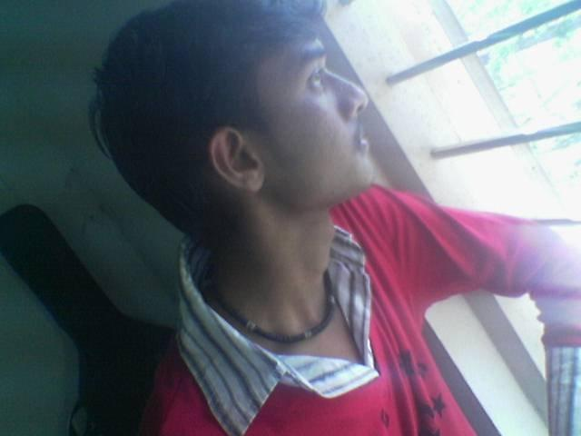

The Yearbook - Commemorating 2005-09!
Kishore Yadav's profile information
Name - Kishore YadavBirthday - 22/10/1988
Email - kkishoreyadav@gmail.com
Address - Chirala-Perala
Phone - 9396353953
Testimonials written by Kishore Yadav
Kishore Yadav's Album

{kind=link}
me
Testimonials
Nagarjuna Pavan Kumar G wrote-veedu naaku IIIT kannaa munde telusu...only veedi peru maatrame..because he's aslo a Nalandan
vaalla campus topper list maa campus lo pedite choosaanu chaalaasaarlu...we met for the first time in AIEEE counselling...nenu observe chesinantalo veedu 200% talented,smooth going,friendly......
veedilo naaku nacchanivi...veedu cricket lo parigettukuntuu vacchi fast ball vestunnattu build up icchi vese slow ball and veedi hair style....
anyway Professor of LPU,
all the best
Nagarjuna
Siva Reddy wrote-
yadav gaadu edeina cheyalanuknte cheyagaladu. friend kosam emmanna chestaadu. vaadni vaade anni vishayllo prove chesukunnadu.
vedilo naaku baaga nacchedi veedu manushalaki chaala importance istaadu not for other things. kaani konchem careless kuda. edava ni enni saarlu tittukunnano. ee madya mem manchi friends ayyipoyam.
veedni chuste naaku maa maama gurtostaadu. andhuko mari enduko gaani veedante naaku istam. veedu naa project partner kuda. veediki asalem lekundaa mottam nene chesesaa. cheddamani chaala try chesaadu. kaani nene chance ivvaledu. sorry ra mama

inka eppudu dabbulu hunter. edaviki enni dabbulu vunna saripov. arei ila ayithe kastame. Janga laantodu neeku anni chotla dorakadu. so be careful and thoughtful.
all the best ra.. lpu lo rock chey..

Satish Chandra Prasad wrote-
maa batch lo 1'st loverboy

anta kante emi cheppanu veedi extralu meeku ardamayye vuntayi,
k ra all da best in everythng maam's !!!
Bhanukiran Vinzamuri wrote-
Avunu raa vam gaadu bale guru chesadu nee pp yahoo id's
swapna_jntu
prettypretti_nitw
EE pp gaadu workspace lo andarni bakra cheytanki try chesevaddu ee id to
 . Orey LPU or future workplace lo aithe ee pani cheymake.
. Orey LPU or future workplace lo aithe ee pani cheymake. Bhanukiran Vinzamuri wrote-
Lord Venky first disciple veedu
 . Idi chadiveka veedi gurinchi tappu gaa anukovadu. first year anta chatting lo picchodu aypoyina yadav 2-1 lo kasi to baita ki vachedu. Inka ala ala venky ni namkuntu 3 years gadipesedu
. Idi chadiveka veedi gurinchi tappu gaa anukovadu. first year anta chatting lo picchodu aypoyina yadav 2-1 lo kasi to baita ki vachedu. Inka ala ala venky ni namkuntu 3 years gadipesedu  .
.
Motanki LPU ki velipotunavu raa chaa i thought u wud be venky's first MS student
 anyways mama you rock.
anyways mama you rock.Vamshi Velagapuri wrote-
mama yahoo unnani rojulu SWAPNA_JNTU ni marchipokunda chesav !
a debhatho chat e marchesa..nalane chala mandhi ni chat manipinchela chesav...thanks buddy..
super cool...venky pet..oora kasi gadu...6 vente 9 vesadu...
Chirala Chinnodu..DMath Don..Hunk Hero..marchipiya kurradu Jr.NTR veera fan andoi...
LPU lo mari e subject DMath a cheppedhi ?
Have fun ra...all the best for ur fuutre..
ilu,
Nee Vam
Kiran Neelisetty wrote-
He is one of the coolest of our batch...doesnt get tensed by anyting...he was the one who showed me how to use gaim to chat with yahoo users in the first year(in workspace systems)...he is my inpiration in one thing(cant mention here...but i hope u understood it)...
rey ipatki aina konchem bayapadadam nerchko raa...
hoping the best for uuu...
Srirang Ranjalkar wrote-
Ultra cool guy with supa-cool attitude. I've never seen him getting angry at anyone. He can achieve whatever he wants to. He's got that talent in him.
would never say no to whatever you ask to him. Once we(me and Aniket) had to go out and we didn;t have a bike. He was just coming to OBH. Aniket simply asked him his bike. And without any second thought he took keys from his pocket and gave to Aniket. Aniket was like
 . coz his bike was just a month old and He didn't knew Aniket very well too.
. coz his bike was just a month old and He didn't knew Aniket very well too.
 to your ultra coolness mama... Also I shall remember you as the guy who missed math exam in 1st year and came back with all form to become a 8 pointer in 2nd year. to your dedication dude!! You rock!!
to your ultra coolness mama... Also I shall remember you as the guy who missed math exam in 1st year and came back with all form to become a 8 pointer in 2nd year. to your dedication dude!! You rock!!
All the very best for your future and keep rocking
Srirang
Samuel John wrote-
assalu janga gaadu veedini , "trying to become an african ani anteyy "

Saaandeepa Phani Srinivas Y wrote-
kyadav gadiki konchem mental..!!
ye vishayamaina anukunte asalu daani kosam maxm effort pedathaadu (may it be studies or nething else meeku telusanukondi)
first yr lo chusi evadra ee pilla bachhaa gaadu anukunna
kaani tharavatha ardhamaindi nene pilla gaaadinani..!!

jr. NTR ki college lo unna iddaru(2) fans lo veedokadu (inkokadu varaga)
asalu narasimhudu cinema bagundani burra unnodu evadaina antaaaada andi??
inka veedi physique vishayaniki vasthe body antha deformed ga untundi
hair vishayam gurinchi kinda chaduvukondi
naaku telisi oka frnd kosam edaina cheyara ante veede no.1 (emi aaasincha kunda chesthadu kaabatte veedu no.1)
ps: maama take care ra..!! LPU lo jaartha (hehe
)
Satyanarayana Koneru wrote-
kyadav ante chat king (no offence meant
)!
babai manchi friend 4 yrs ga ..
frnd kosam emaina chestadu (i mean anything !) ..
veedu bandi toleppudu venka kurchovalante janalaki ucha .. ala tolatadu ..
ammayiltho too much tackle chestadu ..
maku kooda ammaylni set chesi pettu LPU lo ..
eee madya oka hairstyle pettinchadu malli daniki thodu ring okati .. hehe arupu la undi combination
oka mama all the best for ur future !
Charan Thota wrote-
manishi anukunte edinaaa cheyagaladu ani evadanaado kaani veedini example kinda choopinchochu veedu mansu petaale kaani edina kummi d*** aadu .... 2 year lo maama rachaki nijanga mokaalsinde
muscles matter ani anukunaademo recent ga hunk teesaadu .. veediki kooda naalage byk racing cheyaalani kuthekuva ... rey jaagaratha raa maaamu..
emindo emo kaani ee madyalo veedini g*** kindaki thapite pikepudu pant veyatam choodale
all da best raa nee kasi tho akkada HOD ki try cheyi nenochi ms chesta
satya janga wrote-
I am lucky to have a friend like you .....
Samuel John wrote-
first year lo pakka pc lu undadam vallaa mana tholi parichayam .....

veedi valla naaku 1st yr motham lab lo unteyy time pass ayyedhi.. prasthutham veedilo comedy sense tagginattu anipisthundhi
2ndy r 2nd sem thega thirigam konni panula meedha
i can never forget my frends who were with me always and ur one of those
[for wat u said after i came from the interview]
unnecessary things meedha concentration tagginchu
u can live ur life high
urs
sam john
Satish Varagani wrote-
kyadav-anukunte edainaa chestaadu.extremely talented.1st year lo CG dobbettukunnaa,2nd year lo alaa taarajuvvalaa doosukellinaa adi vaadike chellutundi.
modati parichayam-oka senior nannu NTR dialogue cheppamannaadu..nenu aalochistunna..pakka nunchi okadu "cheppey cheppey cheppey!!!" ani NTR range lo emotional gaa okadu nannu push chesaadu. vaade kishore yadav alias kyadav.alaa modalaindi maa sneham. NTR fans ane vishayam oka catalyst maatrame. veedu chaalaa mass gaa kanipinche class hero. naakunna bad habits veediki levu.
CGPA takkuvai BTP evvaruu ivvani dayaneeyamaina paristhitullo nenundagaa Prof.Venkaiah priyasishyudaina Kyadav ni swayamvaramlo pellikooturu range freedom icchi partner ni select cheskomannaadu. appudu takkuna "Varaga" annaadu. appudu edaarilo veltunna baatasaariki "icchata challani beeru labhinchunu" ane board kanapadinanta aanandam vesindi.
memiddaram kalisi rendu research papers publish cheyyagaligaamante its not just our talent,its our chemistry that played the major role.
veedu friendship kosam risks teesukovataaniki venakaadadu.very good at heart..veedu inthavariki evari gurunchi bad ga cheppaledu ...veedito kalisi ila chala panulu cheyatam na life lo cherishing moment ...mama nuvveppudu neelage vundu
Yours Lovingly
Varaga